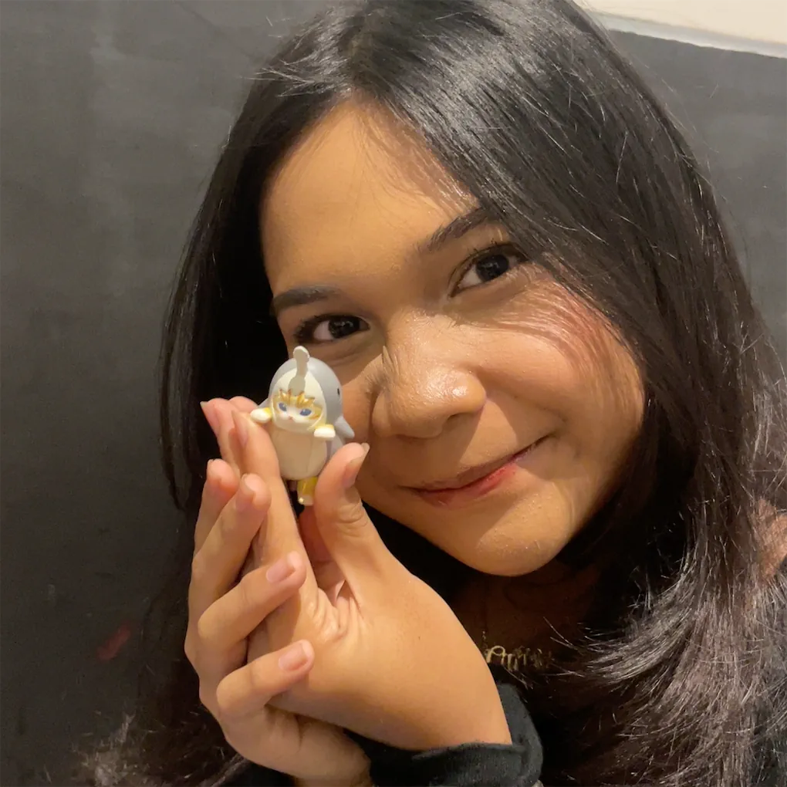

Hello! I'm Aathifah Dihyan Calysta, also known as Tata. I'm currently a university student majoring in Computer Science, but I also wear many hats — a passionate baker, and a self-taught makeup & hair stylist. I love blending creativity with logic — whether it's crafting beautiful web interfaces, baking sweet treats, or helping people feel their most confident with a stunning makeover.
When I'm not studying or working on a project, you can find me experimenting in the kitchen or playing with new makeup looks. I believe in lifelong learning and making every moment count.